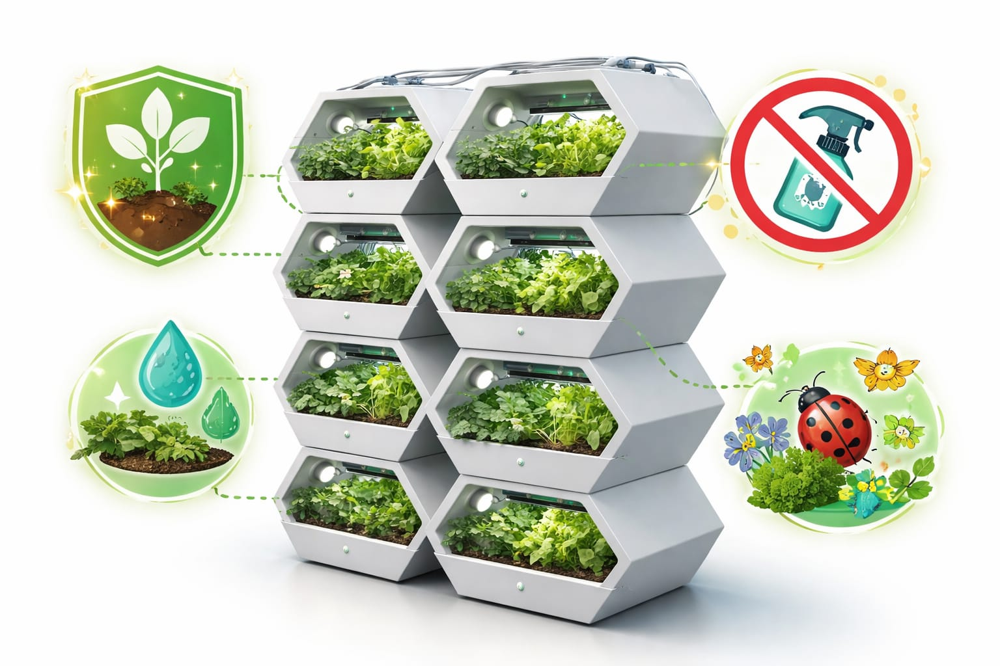
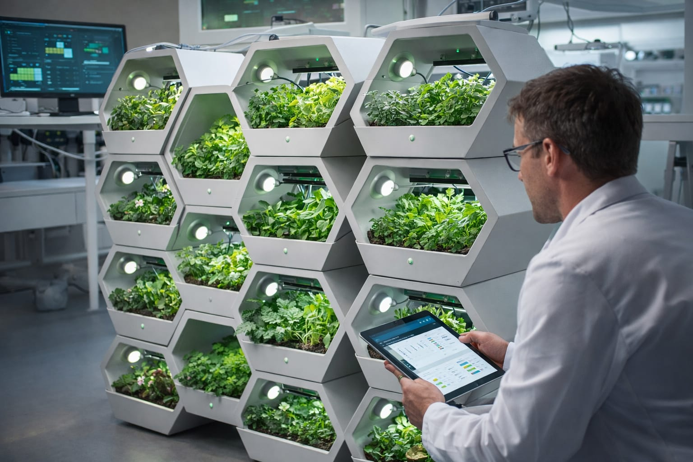

Solution: Eco-combs
How can we reduce agrochemical use while protecting crops, preserving biodiversity, and maintaining productivity? How can we address the problem at its root?
Our Approach
To tackle land degradation, we propose a solution that combines technology with sustainable practices. Our approach aims to reduce agrochemical use, protect biodiversity, and improve land health without compromising food production.
Eco-combs System
The implementation of our Eco-combs: our idea is to create hexagonal pots that can be stacked on top of each other and to the sides to create as much room for plants as possible. Our Eco-combs will have sensors to regulate temperature and humidity, and will be equipped with automatic irrigation to ensure the best growing environment as possible.
Design Philosophy
We decided to go for the hexagonal shape because it's the shape that allows for the most amount of crops in less space, just as bees do. This efficient design maximizes productivity while minimizing our environmental footprint.

